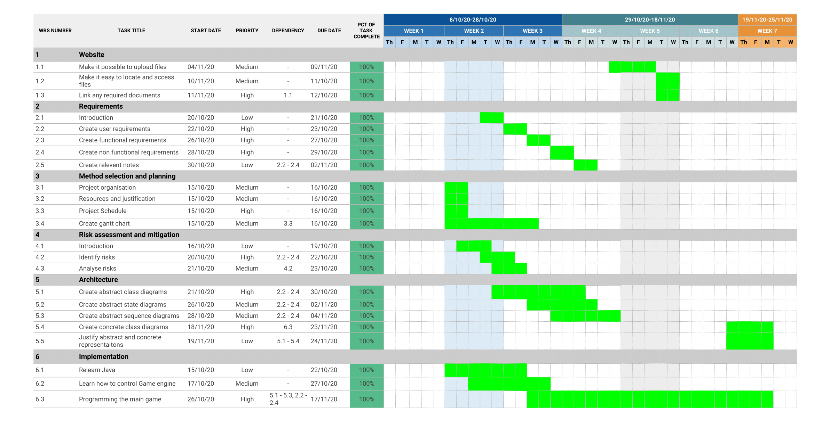

Method selection and planning
Project Organisation
- Team
- Michael Beal
- Lucas Solomon
- Thomas Auburn
- Ryan Early
- Inna Strogonova
- Daniel Pearce
- Clients
- Dimitris Kolovos
- Javier Camara
- Nicholas Matragkas
- Stakeholders
- ENG1 Cohort 1
- Clients
- The University of York Communications Office
- Communication mechanisms and schedule
- Discord
- Zoom
- GitHub
- Google Drive
- Deadline: Aut/9/November 25
Resources
- Preferences of the customer
- Must be written in Java
- Should be able to run on university machines
- Can run on multiple operating systems
- Tools and infrastructure:
- Java
- Gradle build tools
- Game engine
- Image manipulation software
- Personal computers
- Internet research sources
- GitHub/Git
- IDE of choice
- Google Drive
Justification of communication methods
Discord
We chose to use Discord for general communication and text messaging as it has a lot of useful features such as voice/text communication as well as creating specific channels for different parts of the project. We chose it over other, similar services such as Slack because most of the team has more experience with Discord. Additionally, the features that Discord doesn't provide will likely be unused, unhelpful to the project.
We are using Email to communicate with Lecturers to arrange Customer meetings and also to setup initial communication between our team members. In addition, messages that have been sent and received can be stored and searched through safely and easily.
Zoom
We are using Zoom as it allows us to have contact with the Lecturers (Customers) while in a Practical session. It also has the options to chat, share screen, documents and whiteboard - everything needed for team meetings
Google Drive
Google Drive provides an easy way to collaboratively work on files as a team and be able to see changes live. It provides an option to create a safe backup of our files and documentation on edits and changes made over time. It also allows us to control the level of access to shared documents.
GitHub
Used to host the code for the game. This service stores files in Git repositories, allowing for version control and collaborative work. It also has an issue tracker that allows us to flag issues to be fixed and discussed among other features
Justification of tools used
Game engine
The game engine we have decided to use is called LibGDX. We are using this game engine because it provides an open source framework for the game to be built on providing some of the important features that we require as well as having multiple tutorials for its use online.
Gradle build tools
Build tools are used to automate the building of the software and manage dependencies (such as the game engine library), among other reasons. We decided to use Gradle because we will likely use libgdx which is designed for this build system. Originally, we decided on Maven because some of the members of our group had used it previously. However, their experience wasn’t extensive enough for this to be considered and as a result, we decided to use Gradle, considering the game engine.
IDE of choice
The IDE that each team member uses doesn't matter much as long as it has modern tooling and supports our chosen build system.
Team organisation
Team roles
- Michael Beal - Team leader and all deliverables except implementation
- Lucas Solomon - Architecture and implementation and website
- Thomas Auburn - editing deliverables and implementation
- Ryan Early - Risks and implementation
- Inna Strogonova - Architecture, editing and adding to deliverables, website
- Daniel Pearce - Implementation
How the team works
We have organised our team by trying to work through one or two deliverables at a time as a group and discussing how best to complete the task based on the lecture slides for that deliverable combined with the descriptions of how marks are allocated. We used the “eng1 team assessment” pdf that describes specifically what must be included in each section of the deliverable in “3.3.1 Deliverables for Assessment 1” as well as specifying the number of pages required for each segment of the deliverable. We also have been reading over each other’s writing as we are working on the same areas at the same time which allows each member of the team to have a clear understanding of the area we are writing about, allowing members of the team to easily ask questions to each other without confusion of the topic or explanation of what they are talking about. As we complete a deliverable we go back to the topic and insure that any changes we decided are reflected in it so that it accurately displays our current intentions, this allows us to leave areas blank that we are not currently sure about how to complete or areas that we can only decide how to fill after completing a later task . This method is appropriate for our team and for the project as a whole because it clearly outlines what must be submitted for each section of each deliverable and allows us a clear understanding of what is expected. It also gives us an easier time deciding what we must include in each segment as a blueprint for what we are writing.
Project Schedule
- Auber
- Website:
- Make it possible to upload files
- Design website so it is easy locate and access
- Requirements:
- Complete Introduction
- Complete Statement of requirements
- Relevant environmental assumptions
- Associated risks
- Potential alternatives
- Add a table with user requirements
- Add tables with software requirements
- Table with functional requirements
- Table with non-functional requirements
- Architecture:
- Give a concrete representation
- Give an abstract representation
- Justify the representations
- Relate the concrete representation to the requirements
- Method selection and planning:
- Complete Project organisation
- Complete Resources
- Justify communication methods and tools used
- Complete Project Schedule
- Risk assessment and mitigation:
- Complete Introduction
- Complete Justification
- Complete Tabular presentation
- Implementation:
- Decide on a coding style
- Researching
- Build using the Maven build system
- Learn Java
- Learn how to control Game engine
- Choose the data structures
- Build AI
- Extensibility
- Testing:
- Complete unit testing
- Complete customer testing
- Website:
Work Breakdown
Gantt Chart
Critical path
How plans changed over the project
Our schedule for our implementation was shifted backwards a couple of weeks due to issues with uploading code to Github and difficulty communicating with members of the team which caused difficulty beginning the implementation process.
During our customer meetings we asked several questions about the requirements and what exactly was needed in order to successfully complete the project. One of the areas that they informed us should be added was a Demo feature of the game where it would run a pre-scripted game to be demonstrated on repeat during open days for potential students to view.
We were originally going to include all diagrams on the documents themselves but we discovered that they would fill up too much of the page count of the deliverables. Due to this we asked our customer if we could include the diagrams outside of the deliverables themselves and link to them on the page which was accepted. For the rest of the schedule we remained on track, completing the main deliverables that were not dependent on the implementation on schedule.
Download a PDF file View a PDF file